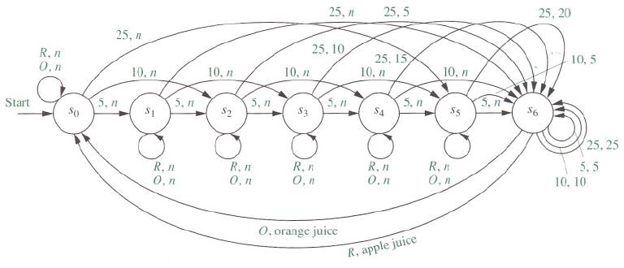

The Dining Philosophers in Scala Akka FSM
Table of Contents
1 The FSM (Finite State Machine)
- FSMs are typically visualized as graphs, with nodes representing states, and directed edges representing transitions.
- Example drawing coming up …
- If FSM is in state S and the event E occurs, it takes the actions A and transitions into the state S'. FSM: State X Event –> Actions X State
- FSMs are strongly related to regex.
1.1 An example: Vending Machine FSM.
- [from Kenneth Rosen, Discrete Math and its Applications, 7e, Section 13.2]

Figure 1: Vending Machine FSM
2 Dining Philosophers using Akka FSM
- Full source code DiningHakkersOnFsm.scala, includes some mods.
- Explained below piecemeal.
- Assumes familiarity with the Dining Philosophers scenario. Read Andrews book section on "Dining Philosophers Revisited."
- Akka FSM is an OOP mixin
- We skip all OOP details of Scala in this lecture. Such as: sealed trait, case object, case class, …
2.1 object DiningHakkersOnFsm
object DiningHakkersOnFsm {
val system = ActorSystem()
def main(args: Array[String]) {
val chopsticks =
for (i <- 0 to 4) yield system.actorOf(
Props[Chopstick], "C" + i)
val hakkers = for {
(name, i) <- List("P0", "P1", "P2", "P3", "P4").
zipWithIndex
} yield system.actorOf(
Props(classOf[FSMHakker],
name, chopsticks(i),
chopsticks((i + 1) % 5)))
hakkers.foreach(_ ! Think)
}
}
chopsticksarray of actors, indexed from 0 to 4, named C0, …, C4.zipWithIndexconstructs ("P0", 0), …, ("P4", 4).- All actors in
hakkersare sent the messageThink
2.2 ChopstickState
sealed trait ChopstickState case object Available extends ChopstickState case object Taken extends ChopstickState case class TakenBy(hakker: ActorRef)
- There are two
ChopstickStates for the chopsticks:Available,Taken TakenByis a class with one constructor that requires ahakkeras its argument. TheActorRefbetter be a "hakker" actor.
2.3 Chopstick Class
class Chopstick extends Actor
with FSM[ChopstickState, TakenBy] {
import context._
startWith(Available, TakenBy(system.deadLetters))
when(Available) ...
when(Taken) ...
initialize
}
startWithdefines the initial state and initial data.system.deadLetterscf. "nobody"when(state) ...per state.initialize: now the actor is placed in the initial state defined instartWith. Until now, this actor was in "limbo".- All these (startWith, when, initialize) are from Akka FSM.
2.4 ChopstickMessage
sealed trait ChopstickMessage
object Take extends ChopstickMessage
object Put extends ChopstickMessage
case class Taken(chopstick: ActorRef)
extends ChopstickMessage
case class Busy(chopstick: ActorRef)
extends ChopstickMessage
2.5 Chopstick State: Available
when(Available) {
case Event(Take, _) =>
goto(Taken)
using TakenBy(sender)
replying Taken(self)
}
- The chopstick actor does the following when it is in state
Available. - If the event
Takehappens, whatever the second parameter may be, transition into stateTaken. TakenBythe sender actor of this event.- Invoke the method
Takenwith itself as the chopstick. usingandreplyingare modifier words.
2.6 A Scala Aside: goto
- This "goto" is related to the famous "goto considered harmful" of Dijkstra. But, Scala's goto is nicely refined.
- Scala is using delimited continuations, of the functional programming world, in defining this goto.
- Ex: A method from the Scala Swarm library, "… stops the execution of your code at one point, and the remaining computation becomes the continuation. … transfers the computation to another host," and returns the result to the stopped computation.
2.7 Chopstick State: Taken
when(Taken) {
case Event(Take, currentState) =>
stay replying Busy(self)
case Event(Put, TakenBy(hakker))
if sender == hakker =>
goto(Available) using TakenBy(system.deadLetters)
}
- If a
Takeevent happens, the statestays the same. - Invoke the method
Busywith itself as the chopstick. - If a
Puthappens, it better be by whoever took this chopstick. If so, transition intoAvailable. Who has it now? Nobody (i.e.,system.deadLetters)
3 FSMHakkerState
sealed trait FSMHakkerMessage object Think extends FSMHakkerMessage sealed trait FSMHakkerState case object Thinking extends FSMHakkerState case object Eating extends FSMHakkerState case object Hungry extends FSMHakkerState case object Waiting extends FSMHakkerState case object WaitForOtherChopstick extends FSMHakkerState case object FirstChopstickDenied extends FSMHakkerState case class TakenChopsticks( left: Option[ActorRef], right: Option[ActorRef])
- The states are all disjoint. An actor cannot be in two or more states simultaneously.
- Advanced Scala: the
Option[T]type. It is a container for an optional value of type T. Cf. None, null, nil, …
4 class FSMHakker
class FSMHakker (
name: String, left: ActorRef, right: ActorRef)
extends Actor with
FSM[FSMHakkerState, TakenChopsticks] {
startWith(Waiting, TakenChopsticks(None, None))
when(Waiting) ...
when(Thinking) ...
when(Hungry) ...
when(WaitForOtherChopstick) ...
when(FirstChopstickDenied) ...
when(Eating) ...
initialize
}
- Philosopher has name, left, right fields.
- Philosopher starts in Waiting state, with no chopsticks.
4.1 Waiting State
when(Waiting) {
case Event(Think, _) =>
println( s"$name starts to think" )
startThinking(5.seconds)
}
private def startThinking(duration: FiniteDuration) = {
goto(Thinking) using
TakenChopsticks(None, None) forMax duration
}
- Soon receives Think message from main object
DiningHakkersOnFsm.
4.2 Thinking State
when(Thinking) {
case Event(StateTimeout, _) =>
left ! Take
right ! Take
goto(Hungry)
}
- In
Thinkingstate, philosopher does not have any chopsticks. This state ends (i.e., a transition will happen) in a finite amount of time. - At the end of the timeout, sends the Take message to chopstcks
leftandright. - Enters
Hungrystate.
4.3 Eating State
when(Eating) {
case Event(StateTimeout, _) =>
println(s"$name puts down and starts to think")
left ! Put
right ! Put
startThinking(5.seconds)
}
- In
Eatingstate, philosopher does have two chopsticks. This state ends in a finite amount of time.
4.4 Hungry State
when(Hungry) {
case Event(Taken(`left`), _) =>
goto(WaitForOtherChopstick) using
TakenChopsticks(Some(left), None)
case Event(Taken(`right`), _) =>
goto(WaitForOtherChopstick) using
TakenChopsticks(None, Some(right))
case Event(Busy(_), _) =>
goto(FirstChopstickDenied)
}
- Note the back ticks.
- Advanced Scala:
Some(x)Some[A] represents existing values of type A - No chopsticks: enter
FirstChopstickDeniedstate.
4.5 WaitForOtherChopstick
when(WaitForOtherChopstick) {
case Event(Taken(`left`),
TakenChopsticks(None, Some(right))) =>
startEating(left, right)
case Event(Taken(`right`),
TakenChopsticks(Some(left), None)) =>
startEating(left, right)
case Event(Busy(chopstick),
TakenChopsticks(leftOption, rightOption)) =>
leftOption.foreach(_ ! Put)
rightOption.foreach(_ ! Put)
startThinking(10.milliseconds)
}
- On entering this state: Already have one chopstick. Need the other.
- Note the naming: leftOption and rightOPtion. One of them can be
None. Hence, the use offoreach. One of these iterates 0 times.
4.6 startEating
private def startEating(
left: ActorRef, right: ActorRef) = { println(
s"$name has $left and $right and starts to eat")
goto(Eating) using TakenChopsticks(
Some(left), Some(right)) forMax (5.seconds)
}
4.7 FirstChopstickDenied
when(FirstChopstickDenied) {
case Event(Taken(secondChopstick), _) =>
secondChopstick ! Put
startThinking(10.milliseconds)
case Event(Busy(chopstick), _) =>
startThinking(10.milliseconds)
}
- "First" refers to the chopstick in the left hand. Second = right hand.
5 Exercises
- Draw a state diagram for a philosopher as constructed here.
- Should this program exhibit livelock? deadlock? individual starvation?
- How do you orchestrate (cause) these?
- Introduce a "waiter" actor to solve the above problems.
- Would prioritizing the chopsticks and/or philosophers enable a solution without needing a waiter?
- Allow philosophers to request the fork(s) from each other. Is this permissible?
- When to use Akka FSM? When to stay with
become?
6 References
- Akka doc http://doc.akka.io/docs/akka/snapshot/scala/fsm.html
- Rick Molloy, "Solving The Dining Philosophers Problem With Asynchronous Agents", Visual C++. 2010. http://msdn.microsoft.com/en-us/magazine/dd882512.aspx Suggested Reading.
- http://rosettacode.org/wiki/Dining_philosophers implemented in 35+ (famous and not-so-famous) programming languages using various concurrency primitives. Highly Recommended Reading.